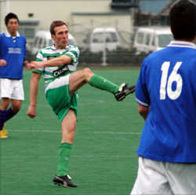
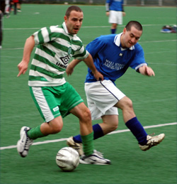

|
Hachioji Park, Sun 21st Jan. Celts continued their great start to 2007 with victory over TML rivals Wall Street Geckoes at Hacjioji Park. With Celts putting out one of the strongest line up for this season & introducing some new players in Henry & Mel.
The match kicked of with what can only be described as a shocking first 10 minutes for the Celts, almost as if we had never played together before and Geckoes capitalized on the situation with some fine interplay culminating with a good build up and finish to take the lead 1-0 (with some luck from a few unfortunate bounces and missed clearances from the Celts dozing Defense).
An inspired substitution, plenty of abuse and a sprinkle of reorganizing from the sidelines bought about the right formation and combination allowing new lad Mel to come on and score a Scholes esque cracker from 30 yards. Both teams continued to have good opportunities and possession. Just before half time Geckoes crafted an opening from the left and as their striker made his way into the box he was tripped by a mistimed challenge.
The resultant penalty, which was well taken, was saved by Aki with a super dive to the left and then cleared for a corner by the reinvigorated Celts defense. This gave the Celts a boost going into halftime at 1-1.The second half started with Celts knocking the ball around the park and making a number of chances for the front men.
On one of his many excursions into the Geckoes box, Soh was upended, penalty Celts, despite the protests from the Geckoes. Dermot stepped up to score the penalty.
The second Celts goal seemed to lift the team and Celts pressed forward with the scent of victory in the air, a new feeling we might add. Celts dominated with the majority of possession and a number of chances came and went. With time running out the Geckoes changed to a 3-4-3 formation and laid siege on the Celts goal, a clearance off the line by Gavin and a shot put wide (when it would have been easier to score) were lucky escapes.
With the clock counting down, Celts "man mountain" Libor picked up the ball on the left wing and rampaged into the Geckoes penalty area only to be bought crashing down for another Celts penalty, no protests this time. Dermot once again stepped up to take the penalty and placed the ball firmly to the bottom right hand corner, however a great save from the Geckoes keeper kept the score line at 2-1 Celts.
3 points for the Celts in a good competitive and fair game of football, well refereed & Geckoes played well and there was very little in it at the end. Celts played well all over the park with new boys Henry & Mel making major contributions to the victory.
Report by Sam Yusef
|